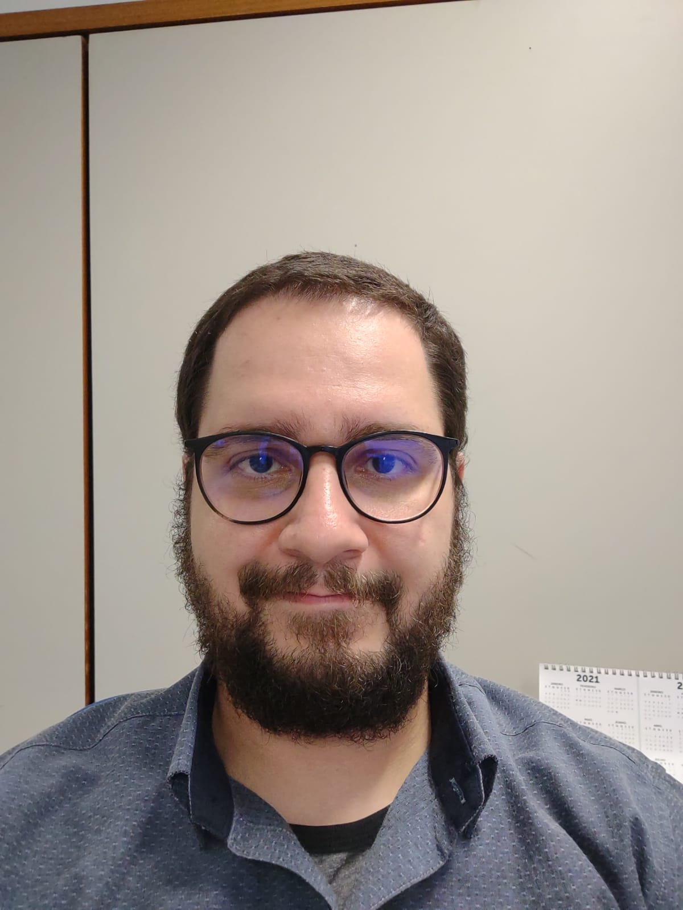

Curriculum Vitae
- Gabriel Dennis Pereira de Faria
- 36 anos
- Solteiro
- Quadra - 15 Conjunto - C Casa - 56, Sobradinho-DF
- 61-991636105
- gabrielfaria88@gmail.com

Experiência Profissional
- Agosto de 2011 a julho de 2013 - Estagiário no Convênio Pró-Social (Plano de saúde
de auto-gestão do órgão TRF).
- Abril de 2015 a fevereiro de 2020 - Analista de contas médicas/analista de recurso
de glosas na empresa Aite - Benner.
- Fevereiro de 2020 a setembro de 2020 - Analista de contas médicas/analista de recurso
de glosas na empresa Maida Infoway.
- Setembro de 2020 a junho de 2022 - Analista de Credenciamento na empresa Maida Infoway.
- Junho de 2022 a junho de 2023 - Consultor de Implantação de Sistemas na empresa OttoHX.
Qualificações e Atividades Complementares
- Curso de Eletrônica Básica - Escola Técnica de Brasília.
- Curso de Montagem e Manutenção de Microcomputadores - Microlins.
- Inglês avançado concluído - Cooplem.
- Estudando curso de Formação em Front-end - Alura